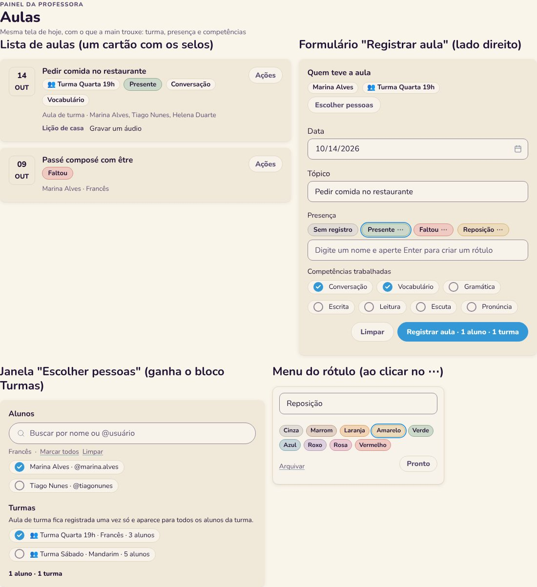
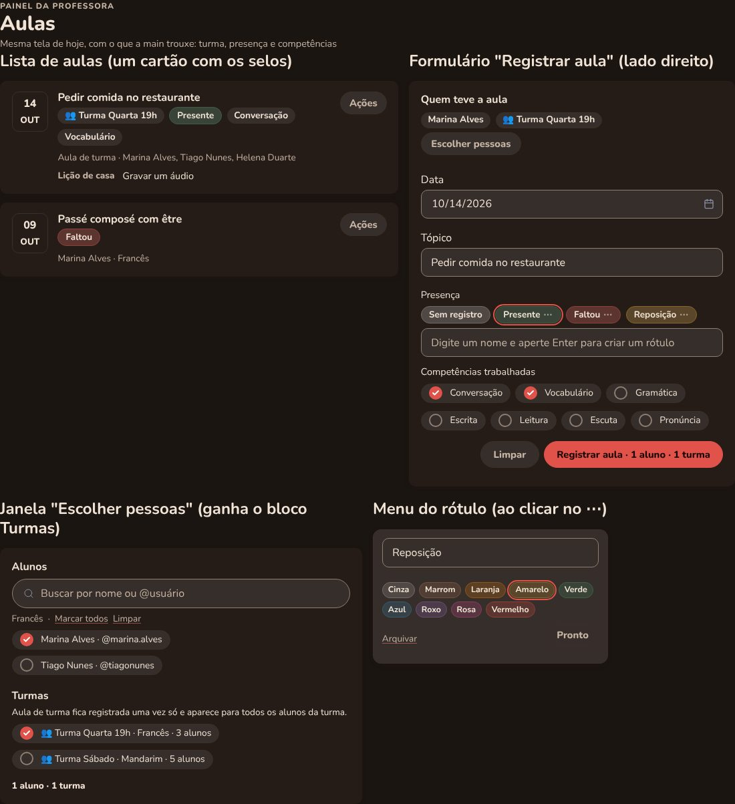
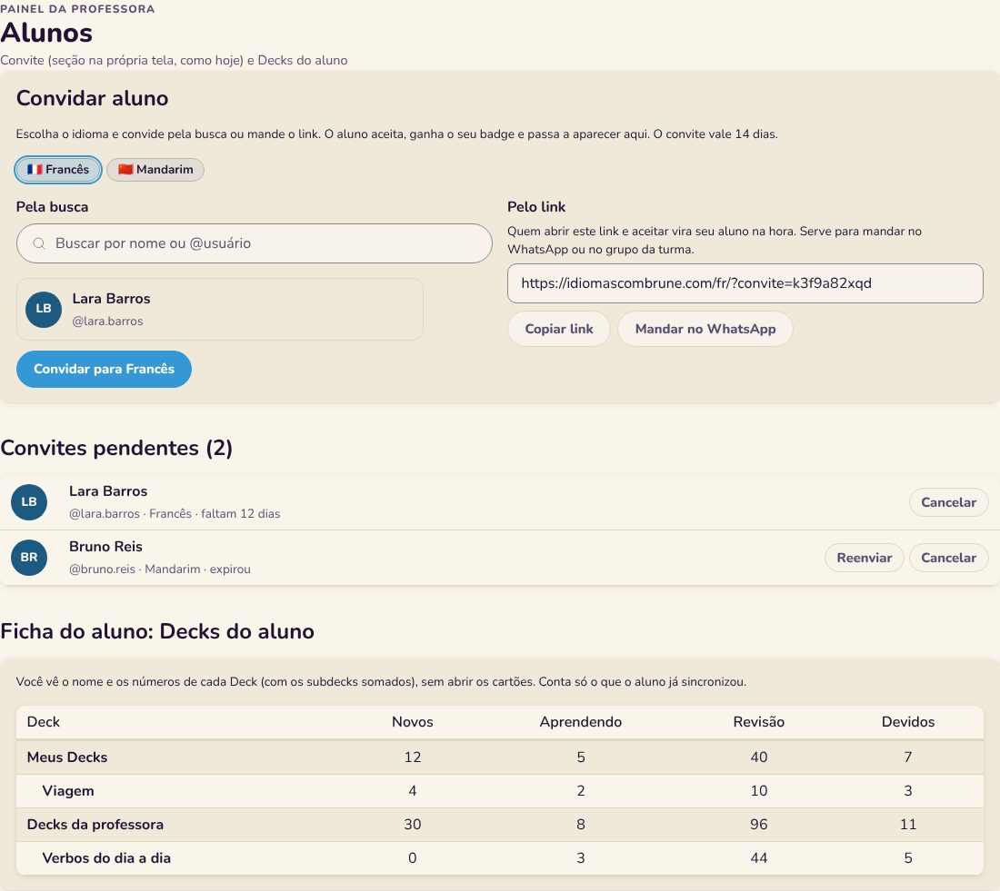
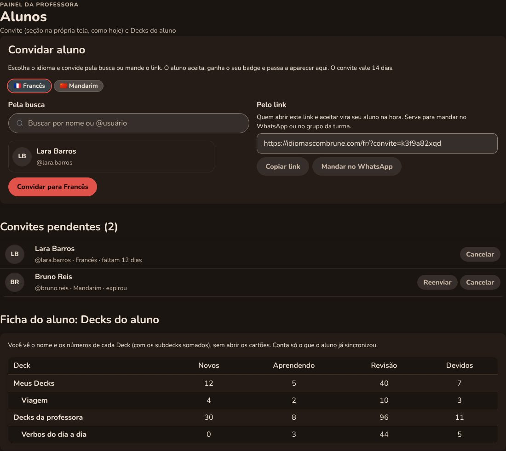
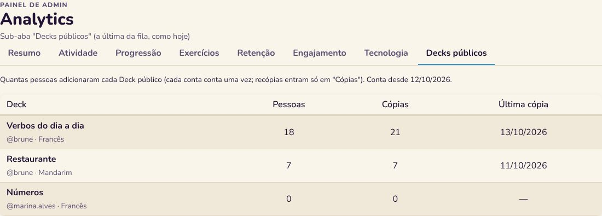
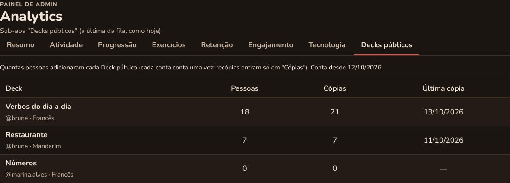
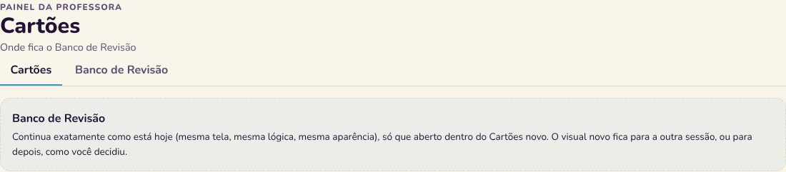

Isto é só o desenho, ainda sem código. Dados de exemplo. Cada bloco mostra o Francês no claro e o Mandarim no escuro. Nada será implementado antes da sua aprovação.
A mesma tela de hoje (lista à esquerda, "Registrar aula" à direita, "Escolher pessoas" numa janela), com o que a outra sessão criou: Presença em rótulos coloridos (clica para escolher, digita e dá Enter para criar, ⋯ para nome, cor e arquivar), Competências em botões de marcar, e a janela de pessoas com o bloco Turmas. A lista mostra turma, presença e competências em selos.


O convite continua como seção na própria tela (idioma, busca de conta e link, vale 14 dias), com a lista de convites pendentes (cancelar, ou reenviar se expirou). Na ficha do aluno entra a tabela de Decks, em árvore, só com nome e números.


A sub-aba "Decks públicos" é a última da fila, como hoje, com a tabela de quantas pessoas adicionaram cada Deck público.


Nada muda no Banco de Revisão. Ele continua com a tela e a aparência de hoje, aberto dentro do Cartões novo.
